[1] Controller
In that feature PocketSharing will control other DLNA compatible devices, for example: control Renderer taking desired content from Server and play it.
To use this feature, follow these steps:
- In the main screen, select Media Renderer you want to control and Media Server to browse content.
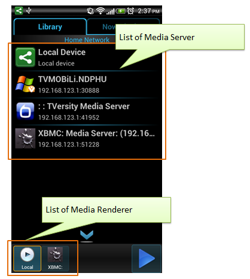
- PocketSharing will show the container/item structure of selected Media Server:
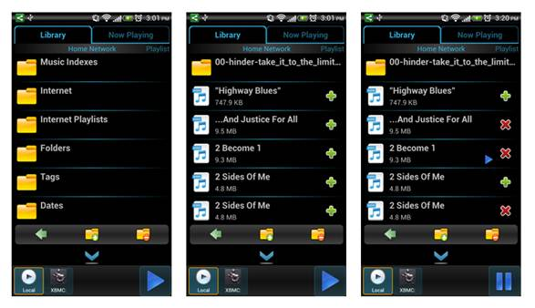
+ A container will have an icon like . Tap to browse its content.
+ Item will have following icon:
· : Item is an audio.
· : Item is a video.
· : Item is an image. In much case, PocketSharing will show thumbnail of image items.
+ Tap on an Item to play it. This item will be added to the current playlist automatically.
+ Tap and hold on an Item to download it or add it to another Playlist.
+ Use to up one level when browsing. Tap and hold to return to the list of Media Server.
+ The symbol is used to mark an Item that is playing.
+ Use to add a single Item to current playlist.
+
Each
item that has  mean
it is exist in current playlist. Use
mean
it is exist in current playlist. Use  to
remove it from current playlist.
to
remove it from current playlist.
+ Use to add all items in current container to current playlist.
+ Use to remove all items in current container from current playlist.
- Control Renderer when playing:
+ PocketSharing provide button to send quick action to Renderer (include play/pause).
+ Switch to Now Playing tab to control full control Renderer:
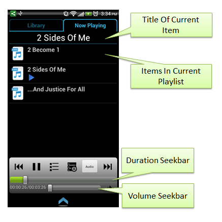
+ Use to send pause action and to send play action to Renderer.
+ Use 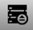 to show list of playlist.
+ Use to show list of Item in current playlist.
+ Use to go to the next content in playlist.
+ Use to go to the previous content in playlist.
+ Filter item type:
· All Items: show all item in playlist:
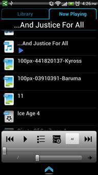
· Video Only:
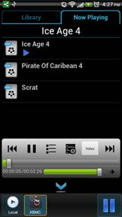 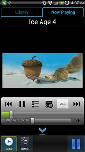
· Music Only
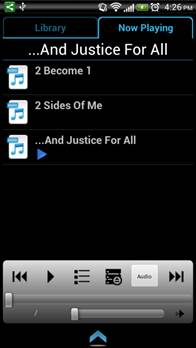
· Image Only:
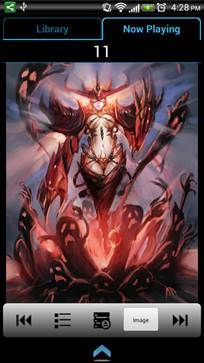
[2] Sharing Local Content
PocketSharing provide a Media Server, named Local Media Server, group content by type (Audio, Video, Image).
Other way, by using “Share” action in Android, you can select and share contents on your device (by PocketSharing) to other Media Renderer when using a file explorer or from the Gallery App.
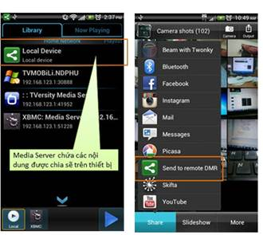
You can use action “Rescan SD Card” from the menu to update content of Local Media Server:
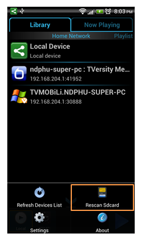
[3] Sharing Youtube Video
PocketSharing can share a video from Youtube for other DLNA Device.
To use this feature, follow these steps:
- Swipe right to left to navigate to the Youtube View.
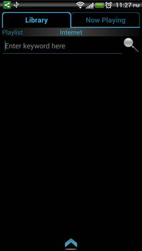
- Enter keyword and use to start searching videos.
- Select Media Renderer, then tap on result video to playlist.
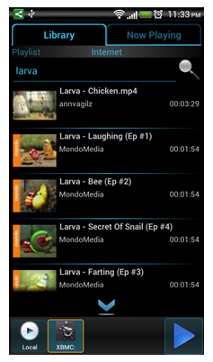
[4] Local Renderer
You can view contents shared by other Media Server in the home network on PocketSharing. Chose Local Renderer then navigate to NowPlaying tab to view content.
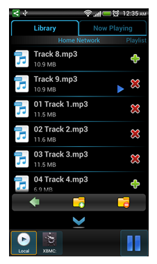
[5] Playlist
PocketSharing can save favorite items to playlist.
To use this feature, navigate to the playlist manager view in Library tab. This screen will show list of saved playlist. Tab on playlist to view its items. Use to return to playlist list.
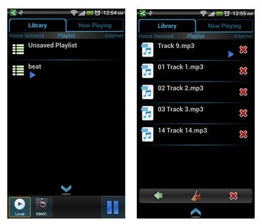
PocketSharing create a playlist named Unsaved automatically, if no playlist are in use, PocketSharing will add new item into this. Content saved in this playlist will be erased once you close PocketSharing.
In
Unsaved Playlist, you can use to
save items into a new saved playlist. Use to
clean all items in playlist or  to
remove individual item.
to
remove individual item.
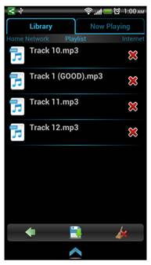
For
saved playlist, you can clean all items or remove individual item like Unsaved
playlist, but PocketSharing also provide the ability to remove a saved playlist
by using  in
the toolbar.
in
the toolbar.
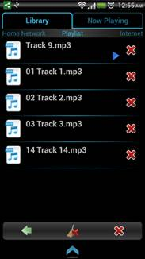
[6] NFC
This feature allow user quick select a DLNA Device in the network by using NFC. You do not need to tap on device to select it. You must touch device with NFC tag saving device’s identity.
PocketSharing provide read and write function on NFC Tag. First of all, you must write device’s identity to NFC Tag by using action tap and hold on device’s icon and select “Write TAG” button in the device’s info dialog. After that, touch a NFC tag to your device to start writing data. PocketSharing will notify if the operation is complete or not.
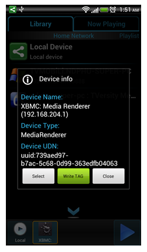
If the operation is success, when PocketSharing discover this tag again, it will chose the device that have identity in the tag as current Media Server or current Media Renderer.